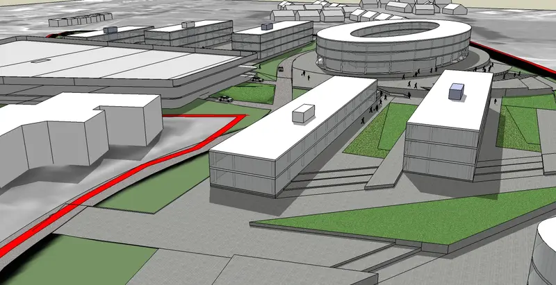
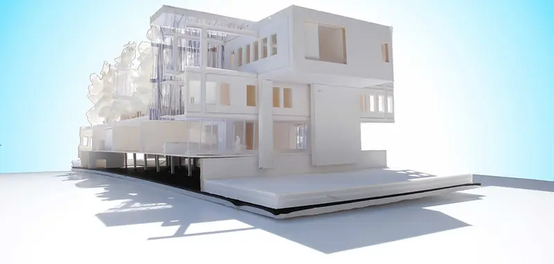

Crystal Ring
Designed as a digital model, then cast in silver. The band is polished smooth and the top is covered in crystal points, shown here on a real quartz and pyrite cluster.
Spin the 3D model →About
Welcome to my portfolio and thank you for visiting. I invite you to explore this site to learn more about my art, specialized interests, internship work, and examples of past projects. If you’d like to collaborate or simply have questions, don’t hesitate to get in touch.
Selected work

A silver ring crowned with crystal growth, modelled in 3D and cast in metal.

Pendants and earrings based on the glass shells of diatoms, single-celled algae.

A neighbourhood of terraced housing, apartments, green streets and a canal-side boulevard.

Campus blocks, a curved timber hall and stepped public squares around a round courtyard building.

Design models, renders and the completed building from my internship.
Designed as a digital model, then cast in silver. The band is polished smooth and the top is covered in crystal points, shown here on a real quartz and pyrite cluster.
Spin the 3D model →Diatoms are single-celled algae that live in shells of glass. Their cell walls have intricate patterns of silica. Keisō turns those patterns into cast pendants and earrings in gold, copper and patinated finishes, packed in a box with the story printed inside.
An urban design proposal: rows of terraced houses with private gardens, apartment blocks along a tree-lined boulevard with a timber walkway and bus route, and a canal edge to the south.
A campus scheme: new mixed-use blocks, a curved timber-clad hall and a round courtyard building around stepped public squares, green terraces and tree-lined plazas.
Work from my internship with the Department of Defense: design models, renders and photos of the completed building.
Interactive
Drag to rotate · scroll or pinch to zoom · right-drag to pan.